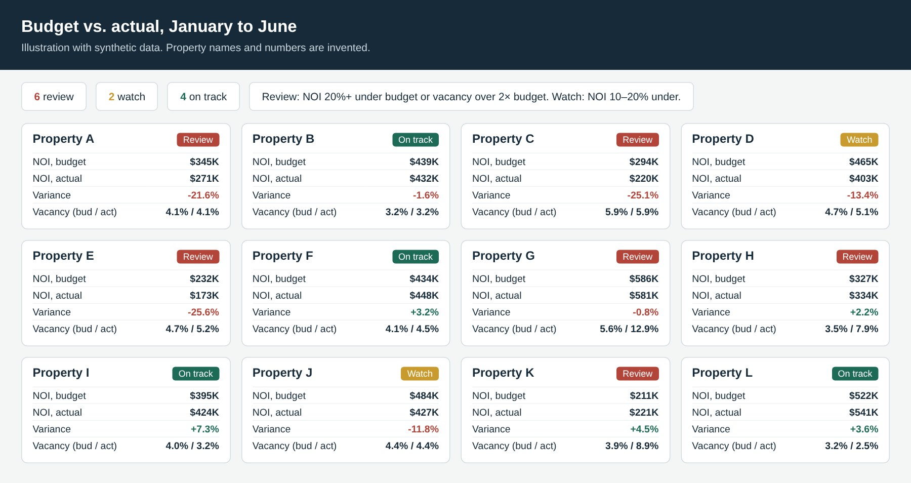

July 2026 to presentPart-time during the school year. Joining full time in July 2027.
Asset Management & Development Intern
Smith & Henzy, affordable-housing development and finance (LIHTC)
I support the asset management and development teams on a portfolio of low-income housing tax credit (LIHTC) properties: performance reporting, next-year budgets, the monthly portfolio tracker, construction draws and compliance. I use AI tools heavily for the build work. I set the methodology and rules, direct the work and check every output before it goes to my supervisors.
Budget vs. actual dashboard (my own initiative)
- Problem: leadership had no single view of how properties were doing against budget, and the financials arrived in about 9 different property-manager formats.
- What I did: normalized six months of budget-vs-actual data for 21 properties into one dataset with 5 standard metrics (income, expenses, NOI, vacancy, expense ratio). I built a one-file dashboard in R and Quarto with automatic red, yellow and green flags.
- Challenge: 7 properties paid some costs, like insurance or taxes, through escrow on one side of the report only. I set a rule to drop a mismatched category from both sides and footnote it, so no property is ever compared on mismatched totals. Some reports were scanned images that needed OCR.
- Result: flagged 7 properties for follow-up. New months can be added without touching the dashboard code.

Next-year operating budgets
- Prepared 2027 operating budgets for 16 properties from trailing-12-month actuals, using a written rule set so every property is budgeted the same way. For example, vacancy is a flat 5%, utilities rise 3% unless a known rate exists, and management fees come from the actual contract.
- Caught problems that would have skewed budgets: partial-year data labeled as a full year, outdated embedded tabs, and debt on the balance sheet that never showed on the income statement. A line-by-line audit after one rebuild caught a stale value that a formula check had missed.
Monthly portfolio tracker
- Each month about 30 properties' financials go into one tracker. I documented where each of its ~28 columns comes from for each of the 6 main report formats, and added tie-out checks (income and net cash flow must match the statements).
- Found and fixed a formula error that added up a monthly balance instead of averaging it, overstating delinquent rent across the portfolio. I then built a delinquency tab that finds each property's latest month and highlights rising or falling balances.
Compliance and one-off analysis
- Read the recorded regulatory agreements for 3 newly acquired LIHTC communities (310 units) to find 7 required resident-service categories and how often each is required. I caught that the property manager's notes, which said there was no requirement, were wrong. I then lined up local nonprofit and public providers.
- Reviewed 57 vendor invoices against the payables tracker and caught 13 already entered, a possible duplicate charge, and a vendor change of payment account that could have misrouted a payment.
- Built a side-by-side pro forma comparison for the firm's principals. The first draft was called "impossible to read," so I rebuilt it with clear labels, simple formatting and notes on a separate tab, and it was approved on the second pass.
- Excel
- R
- Quarto
- Python
- OCR
- AI agents
- LIHTC
- Budgeting
- Variance analysis